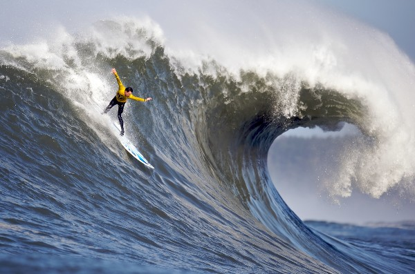

Images
 SurfingWhat kind of photos are good to encode using JPEG?
JPEG is good for the real pictures that have many colors and gradients
What kind of photos are good to encode using GIF?
animation, do not work well with variation of color. It works for simple animation that have simple logos
What is unique about the PNG format?
PNG is good for keeping high images quality and not losing datas
How do you resize your photo to the size it should be displayed?
Before uploading my photo, I resize it by using editing program.
Why should you resize photos using photo editing software instead of resizing it using CSS?
CSS cannot reduce the file size, so it would make my homepages slow down
What is CSS validation?
CSS validation is to check my css code for errors.